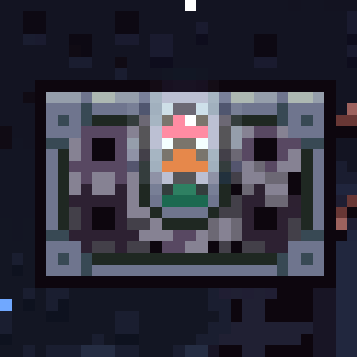
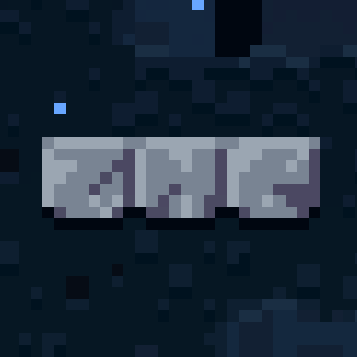
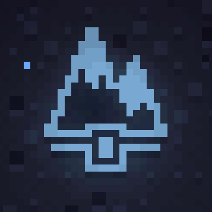
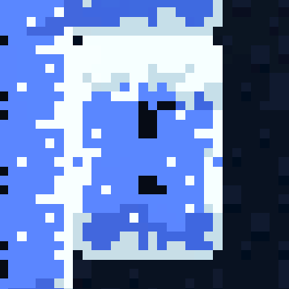

Teravad orad, mis tapavad mängija, kui neid puudutatakse. Need võivad olla ükskõik millises asendis ja ka teiste objektide peal. Neid leidub igas peatükis, kuid nende stiil võib erineda.
Peatükk 1 toimub hüljatud linnas ja on mängu esimene tõeline tase, mille peamine eesmärk on õpetada mängijale põhilisi mängumehaanikaid, nagu liikumine, sööstmine ja saladuste otsimine.
Teravad orad, mis tapavad mängija, kui neid puudutatakse. Need võivad olla ükskõik millises asendis ja ka teiste objektide peal. Neid leidub igas peatükis, kuid nende stiil võib erineda.

Vedruga platvormid, mis põrgatavad mängija õhku. Nende asendist oleneb, mis suunas mängija põrkab. Kui mängija põrgatatakse üles ja ta hüppab samal ajal, on hüpe kõrgem. Neid kasutatakse mõnedes peatükkides.

Valgusfooriga plokid, mis hakkavad liikuma, kui mängija neid ükskõik mis viisil puudutab. Plokid liiguvad kiiresti mööda kindlat joont ja liiguvad seejärel aeglaselt tagasi alguspunkti. Kui mängija sööstab või hüppab ajal, mil plokk kiiresti liigub, saab ta ploki liikumissuunas kiirenduse. Neid kasutatakse mõnedes peatükkides.

Platvormid, mis lagunevad mõne aja pärast, kui nende peale astuda või neist kinni haarata. Neid kasutatakse enamikus peatükkides.

Pragunenud seinad, mis lähevad katki, kui nende vastu sööstad. Enamasti kasutatakse neid saladuste ja peidetud ruumide varjamiseks. Neid kasutatakse kõikides peatükkides.

Kindlate ruumide alguses olev sümbol, mis süttib, kui selleni jõutakse. Need lasevad mängijal pärast menüüsse minekut või mängu kinni panemist sellest kohast hiljem jätkata. Neid kasutatakse kõikides peatükkides.

Rohelised kristallid, mis taastavad mängija sööstu, kui see on juba ära kasutatud. Pärast kasutamist vajavad nad hetke, et taastuda. Neid kasutatakse enamikus peatükkides.

Sinised ja roosad plokid, mis asuvad igas peatükis ainult ühes kindlas ruumis, kus asub kassett. Nad vahetuvad muusika rütmis tahke ja läbitava oleku vahel, nii et igal hetkel on kas sinised tahked ja roosad läbitavad või roosad tahked ja sinised läbitavad.

Tavalist ruumi tekstuuri meenutavad plokid, mis kukuvad otse alla, kui neid ükskõik mis viisil puudutada. Kui need kukuvad mängijale peale, saab mängija surma. Nende küljes võivad olla ka teised objektid, näiteks orad. Neid leidub igas peatükis.